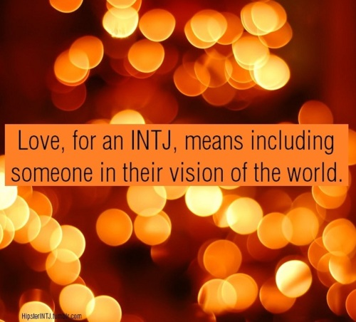

INTJ TRONG QUAN HỆ TÌNH CẢMINTJ sống trong đầu của họ. Họ không ngừng tìm kiếm những điều thú vị của thế giới xung quanh và liên tiếp đưa ra những ý tưởng, lý thuyết mà sau này được sử dụng trong những kế hoạch cũng như hệ thống kho ứng dụng của mình. Đôi khi, điều họ thấy và hiểu theo bản năng có phần hoàn hảo hơn thực tế của một mối quan hệ. INTJ sẽ gặp khó khăn khi đối mặt với sự không đồng nhất giữa thực tế và những điều họ suy tưởng.  INTJ không thường xuyên hài hòa giữa những cảm xúc trong họ, hay với bất kì ai khác. Họ cũng có xu hướng tin mình luôn đúng. Trong khi sự tự tin và lòng tự trọng của họ là điểm hấp dẫn đối phương, sự thiếu cảm thông với người khác lại là vấn đề khiến họ vô tình làm tổn thương người yêu. Nếu đây là khó khăn của INTJ, bạn nên tạo cơ hội cho người yêu thể hiện quan điểm của mình, cơ hội là người đúng, và hãy quan tâm hơn đến những cảm xúc tiêu cực bạn có thể mang lại cho người ấy vì lời nói của mình, nghĩ đến hậu quả của chúng để giảm thiểu khả năng gây thương tổn. Trong những tình huống căng thẳng, INTJ cũng nên thể hiện sự cảm thông về mặt tinh thần để đáp ứng nhu cầu tình cảm của đối phương, thay vì tận dụng cuộc cãi nhau để thử nghiệm hay làm những điều mình thường làm (lấy nó làm thú vui tiêu khiển để đưa ra những ý tưởng mới trêu chọc con người và nhân loại nói chung). Nhắc đến tình dục, INTJ thích nghĩ về nó và tìm cách hoàn thiện hóa lí tưởng của họ về nó. Nếu là tích cực, mối quan hệ của INTJ sẽ giúp họ phát triển sự sáng tạo và sức ảnh hưởng lên chủ đề nhạy cảm này. Tuy nhiên, nếu là tiêu cực, INTJ sẽ muốn nghĩ đến chuyện làm tình hơn là thực hành nó. Họ có xu hướng tiếp cận tình dục một cách lí thuyết và sáng tạo trên nhiều bình diện hơn là tìm cơ hội để thể hiện bản thân hay tình cảm cá nhân. Tuy nhiên, nhiều INTJ khi hiểu ra cốt lõi của tình cảm hay những bước cơ bản của mối quan hệ vẫn có thể bộc lộ tình cảm bằng những cử chỉ thân mật. INTJ có thể chấm dứt một mối quan hệ khi họ thấy nó đã kết thúc, và tiếp tục với cuộc sống của mình. Họ tin đó là điều đúng để làm. Họ sẽ gặp nhiều khó khăn trong nỗ lực vượt qua mối quan hệ ấy so với nhiều người khác. INTJ là những con người thông minh, những người hiểu thấu cốt lõi và ý nghĩa của nhiều lĩnh vực cuộc sống. Trong quan hệ tình cảm, trở ngại lớn nhất của họ là xu hướng “nghĩ nhưng không làm” của họ, và sự khó khăn trong việc hòa hợp giữa thực tế và những suy nghĩ cá nhân. INTJs có nhiều khả năng tạo dựng được mối quan hệ tích cực, vì họ thường không cho phép bản thân chấp nhận mối quan hệ tiêu cực. Tuy bất kì Type nào cũng có thể đến với nhau, người yêu lí tưởng của INTJ là ENFP, hoặc ENTP. Trực giác hướng nội của INTJ sẽ rất hòa hợp với các type có Trực giác hướng ngoại. Nguồn: Personality Page Translated by Wonders
Theo định luật hấp dẫn thì INTJ sẽ bị thu hút bởi ENFP, ENTP. Nhưng với sự lý trí của mình, họ luôn đặt ra khá nhiều tiêu chuẩn cho người bạn đời của họ, và khi các ENFP, ENTP tỏ ra không phù hợp với những tiêu chuẩn đó, họ sẽ bỏ ngay. Thế nên nhiều INTJ có xu hướng chọn người giống mình, vì quan niệm giống nhau sẽ hiểu nhau hơn. Nói đây là 1 trong những Type kén chọn nhất cũng không sai. Vì vậy đối với những người trái cực mình cảm thấy khá là thu hút, nhưng dùng lý trí xét lại thì lại thấy nhiều điểm không hợp. Nên thường mình chỉ có ý làm bạn thôi (dù rất bị thu hút). INTJ nam thì đa phần lý trí quá mạnh nên cảm xúc nhất thới khó mà chi phối được họ.
Nếu xét mức độ khắt khe trong chọn người thì INTJ khó sánh bằng cách bạn SF (đây là điều rút ra từ thực tế). Các tiêu chí của INTJ tưởng như rất phức tạp nhưng lại mang tính đại trà, phổ quát (tức là bất cứ ai cũng có thể làm tốt được nếu muốn, như là chung thủy, biết thu vén gia đình, biết lắng nghe và tiếp thu cởi mở etc). Khi các tiêu chí này được đáp ứng thì nói chung INTJ khá dễ chịu cả tình cảm lẫn đời sống hôn nhân (có trách nhiệm tầm nhìn, biết lo nghĩ, không cần đáp ứng các nhu cầu cảm xúc quá phức tạp và trong một chừng mực nào đó, rất quan tâm đến những người trong vòng thân thiết của họ). Việc thu hút xét trên khía cạnh giới tính phụ thuộc nhiều hơn vào yếu tố sinh lý. Ngoài ra còn có cách nói chuyện, cách dẫn chuyện, điệu bộ, lượng kiến thức mà thường thì cái này không do type. Nhưng thực tế, các INTJ mình biết phần nhiều phối hợp tốt với các type INTP, ISTJ và INFJ. Nhược điểm lớn nhất của INTJ đó là trong khi Ni làm họ khó diễn đạt các ý tưởng trong đầu mình thì Te dễ làm cho những người quanh họ cảm thấy bị phán xét. Do đó INTJ kỵ nhất với các cô nàng mang tư tưởng feminism to bự và các anh chàng sụt sùi đa cảm. Tốt nhất nên tránh xa những trường hợp trên.